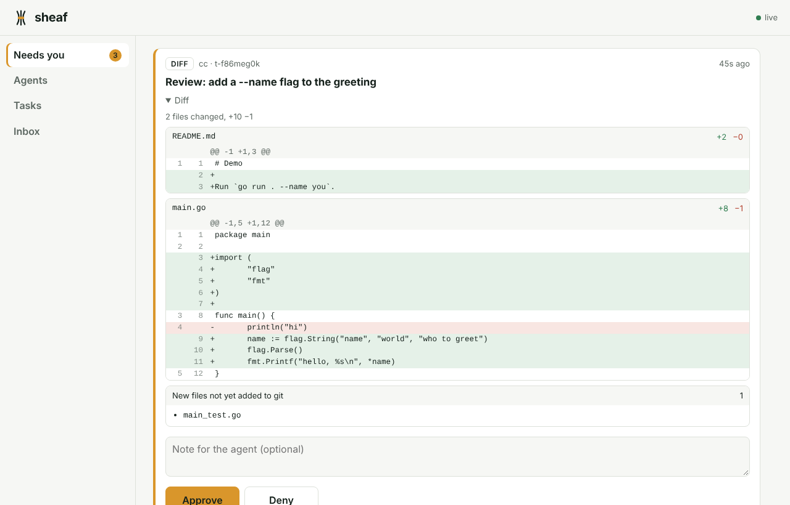

Sheaf is the coordination layer for your AI coding agents. They message each other instead of typing into each other's terminals, work in their own worktrees under your rules, pick up where they left off after a reboot, and bring everything that needs you to one queue.
$ brew tap sensahin/sheaf https://github.com/sensahin/sheaf $ brew trust sensahin/sheaf $ brew install sensahin/sheaf/sheaf

Sheaf sits under whatever you already use, whether that's tmux, herdr, cmux, Rex or a plain shell, and adds the layer agents need to work together safely.
Agents send messages, questions and handoffs through MCP tools, with read receipts. Nothing lands in a half-written prompt.
Every task gets its own git worktree, and every agent gets its own token and policy. A push or a sudo waits for you. A force push is refused.
Every message, handoff and decision is written to an event log first. After a crash, sheaf resume brings each agent back to its unfinished task.
Approvals, questions and diffs from every agent arrive in one place: the desktop app, your phone, or sheaf queue.
Three commands, then you only hear from your agents when they need you.
Once per project, Sheaf writes the agent's hook and MCP config. It never rewrites a config you already have.
$ sheaf setup claude-code $ sheaf setup codex
Each agent gets a tmux window (or runs in place in herdr, cmux or Rex), with its status tracked from the start.
$ sheaf start planner $ sheaf start builder --task t-7xa6x441
A push, a review or a question waits in your queue. Approve from your desk, your phone or the terminal.
$ sheaf queue a-3k9d2m1x builder git push origin sheaf/… $ sheaf approve a-3k9d2m1x
Hooks hold risky tool calls for your approval, and MCP gives every agent the same way to talk to the others. Anything else runs under sheaf run.
What each agent gets is in the agent guide.
There's no account, no cloud, and no telemetry. One small Go binary runs the daemon and the CLI, with SQLite for the log.
# policy: the strictest matching rule wins
{
"default": "allow",
"rules": [
{"action": "shell", "match": "git push --force*", "effect": "deny"},
{"action": "shell", "match": "git push*", "effect": "ask"},
{"action": "shell", "match": "sudo *", "effect": "ask"},
{"action": "secret", "match": "*", "effect": "ask"}
]
}
macOS and Linux, on x86 and Arm. Windows builds are available and less tested.
$ brew tap sensahin/sheaf https://github.com/sensahin/sheaf $ brew trust sensahin/sheaf $ brew install sensahin/sheaf/sheaf $ brew services start sheaf # run the daemon now and at login
# macOS (Apple Silicon and Intel), Linux and Windows # Download from github.com/sensahin/sheaf/releases. # The app includes the sheaf CLI and starts the daemon for you.
# one binary, no dependencies $ tar xzf sheaf_*_darwin_arm64.tar.gz $ sudo mv sheaf_*/sheaf /usr/local/bin/
$ go install github.com/sensahin/sheaf/cmd/sheaf@latest
# then, in any project $ sheaf init $ sheaf agent add planner --kind claude-code --resume "claude --continue" $ sheaf setup claude-code $ sheaf start planner